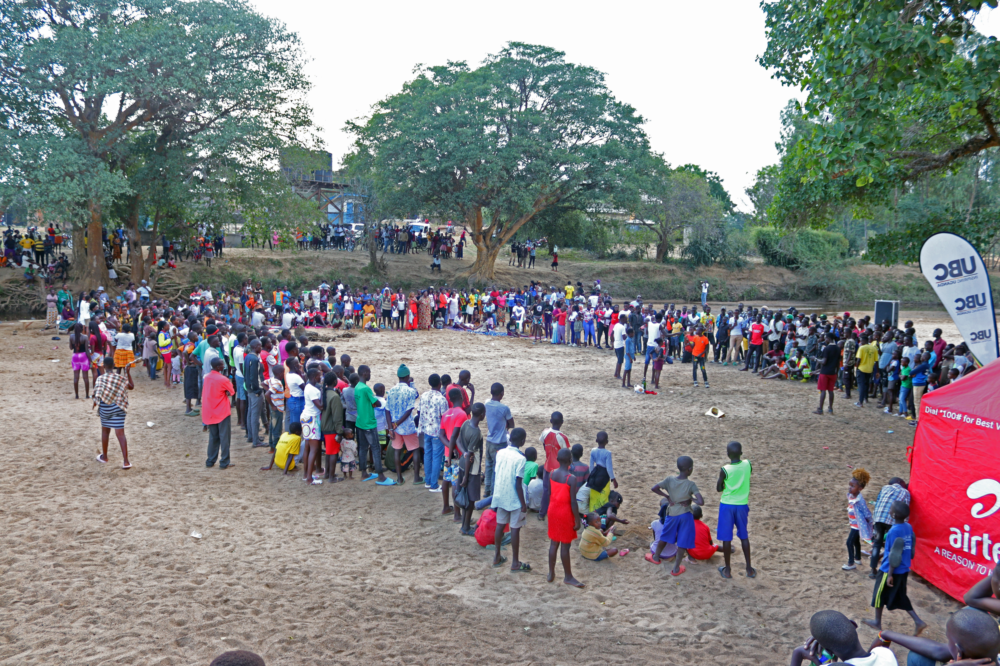

Our Major Projects

Simama! Say NO to Harmful Practices
CSYDI's flagship initiative empowering youth as change agents to advocate against FGM and other harmful traditional practices through leadership training and peer-to-peer education.
Support Project
The Annual Kanyangareng River Carnival
A vibrant community celebration featuring arts, sports, and entertainment that promotes culture, unity, and social change while raising awareness on health and community development.
Support Project
Radio Talk Show - Kalya FM
Radio partnership disseminating vital health information, educational content, and community sensitization through cost-effective radio talk shows and awareness campaigns.
Get Involved
Youth Tech & Innovation Lab
A modern digital hub equipping youth with coding, digital literacy, and innovation skills through mentorship programs to solve community challenges.
Join the MovementProject Details & Impact
🎯 Simama! Say NO to Harmful Practices
Overview: The Simama project is CSYDI's flagship initiative designed to combat harmful traditional practices and empower youth with advocacy skills.
Key Focus Areas:
- Training youth as change agents to advocate against FGM and other harmful practices
- Building leadership capacity among young people
- Creating peer-to-peer education networks
- Strengthening community engagement and dialogue
Impact: Thousands of youth have been equipped with knowledge and skills to challenge harmful norms in their communities.
🎪 The Annual Kanyangareng River Carnival
Overview: A vibrant community event celebrating culture, unity, and social change through arts, sports, and entertainment.
Key Focus Areas:
- Cultural celebration and community bonding
- Health and social awareness campaigns
- Youth talent showcase and entertainment
- Fundraising for community development projects
Impact: Attracts thousands of participants annually, creating a platform for positive social messaging and cultural preservation.
📻 Radio Talk Show - Kalya FM
Overview: Partnership with Kalya FM to disseminate health information, educational content, and community sensitization through radio.
Key Focus Areas:
- Radio talk shows on health and social issues
- Health awareness campaigns and education
- Cost-effective information dissemination across borders
- Community feedback and engagement through radio
Impact: Reaches thousands of listeners with vital health and social information, breaking down communication barriers.
💻 Youth Tech & Innovation Lab
Overview: A state-of-the-art digital hub equipping youth with 21st-century technical skills and innovation mindset.
Key Focus Areas:
- Digital literacy and coding training
- ICT mentorship programs
- Youth innovation and entrepreneurship
- Problem-solving through technology
Impact: Bridges the digital divide and prepares youth for tech-driven employment opportunities in a rapidly changing world.
Project Field Photos
See our projects in action - moments captured from the field showcasing the real impact of our work.

Youth Training Session

Community Engagement

Workshop in Progress

Team Collaboration

Community Impact

Project Site
Our Major Partners

Mercy Corps
Years: 2021 – 2023
Terms of Collaboration: Mercy Corps funded CSYDI to implement a 3-year project titled “Girls Improving Resilience through Livelihoods and Health (GIRLH)” among the Pokot of Amudat District.
Project: Girls Improving Resilience through Livelihoods and Health (GIRLH)

BRAC
Years: 2019 – 2020
Terms of Collaboration: CSYDI implemented a youth skilling project with BRAC among the Pokot/Amudat community.
Project: Youth Skilling among the Pokot/Amudat Community

TASO (The AIDS Support Organisation)
Years: 2021 – 2022
Terms of Collaboration: TASO funded CSYDI to implement an HIV/AIDS prevention project among the Pokot of Amudat District.
Project: HIV/AIDS Prevention Project among the Pokot of Amudat District

Kalya FM
Years: 2019 – Present
Terms of Collaboration: Partnership focuses on cost-effectiveness to reduce cross-border communication costs. Kalya FM operates within CSYDI offices, supporting radio talk shows, sensitization, and dissemination of relevant information.
Project: Information Dissemination & Sensitization through Radio

Center for Conflict Resolution (CECORE)
Years: 2021 – 2022
Terms of Collaboration: CECORE worked with CSYDI to implement a peace project in Amudat District, focusing on engagement with Youth Peace Champions.
Project: Youth Peace Champions Initiative

Karamoja Harders of the Horn(KHH)
Years: 2024 – 2025
Terms of Collaboration: Strengthening Peace, Gender Equality, and Climate Resilience through cross-Border Collaboration.
Project: Strengthening Local CSOs capacities in Peace, Gender Equality, and Climate Resilience through Cross-Border Collaboration.

DefendDefenders
Years: 2023 – Recent
Terms of Collaboration: DefendDefenders built our capacities in protecting human rights. Building on the physical & digital security, CSYDI was selected for the next level of skills development as Trainers of Trainees(TOT). Designed to strengthen our capacity to serve as trainer in physical & digital security management and to support organizations effectively responding to and mitigating risks.
Project: Capacity Building
Action-Aid with support from the European Union
Years: 2026(Ongoing)
Terms of Collaboration: Partnership to protect girls in Amudat District. We work together to stop child marriage and FGM. We use school drama clubs and community radio to teach human rights, for a period of 3months
Project: Simama! Say NO to Harmful Practices
Our Impact & Achievements
Quantified success through years of dedication to youth empowerment and community transformation
Direct beneficiaries through our programs and initiatives
Villages and districts impacted by our interventions
Ongoing and completed initiatives transforming lives
Organizations collaborating in our mission
Decade of consistent excellence and innovation
Youth equipped with ICT and entrepreneurship competencies
Thousands informed through health and awareness campaigns
Positive feedback from communities and participants